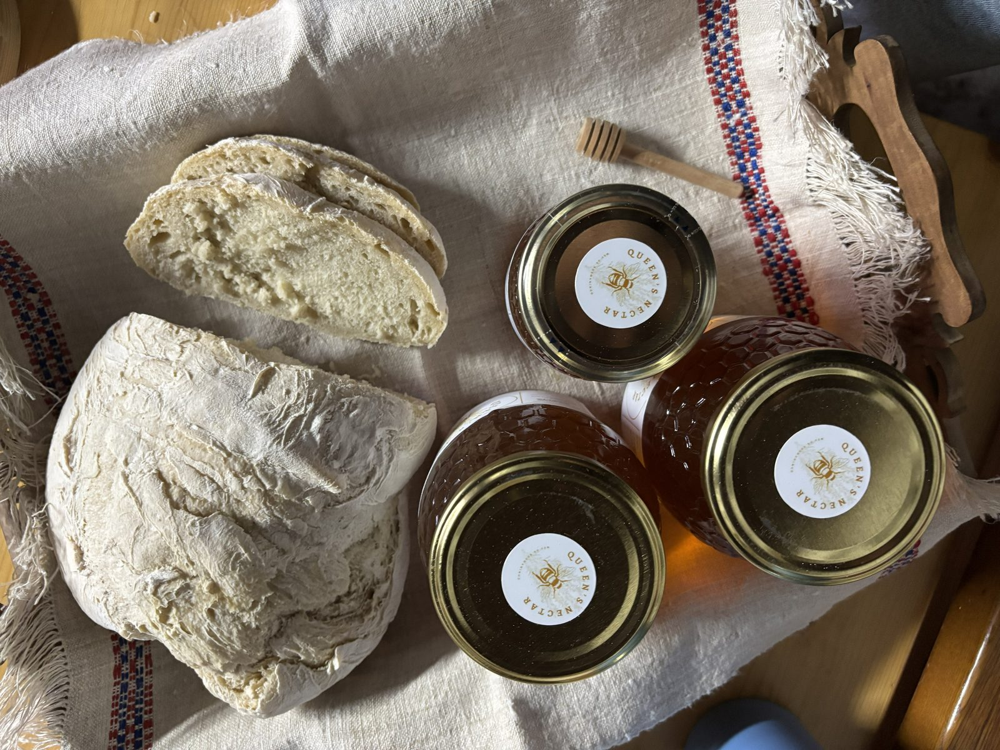

A nossa história
São Pedro do Esteval · Proença-a-Nova

Nas margens do Rio Ocreza, entre olivais centenários e campos de rosmaninho selvagem, as nossas colmeias existem há gerações. Herdadas do nosso avô, continuam hoje no mesmo lugar, em São Pedro do Esteval, onde a natureza preserva tudo intacto.
O mel Queen's Nectar é de rosmaninho, extraído a frio, sem aquecimento e sem aditivos. Do favo para o frasco, sem atalhos. O resultado é um mel de sabor floral intenso, que preserva todos os aromas e nutrientes naturais da flor de rosmaninho das encostas do Ocreza.
Uma tradição familiar que hoje chega até si.
Origem
São Pedro do Esteval, Proença-a-Nova
Flor
Rosmaninho selvagem
Extração
A frio · Sem aquecimento · Sem aditivos
Produtor
Casa Agrícola Acácio Lopes Catarino, Lda